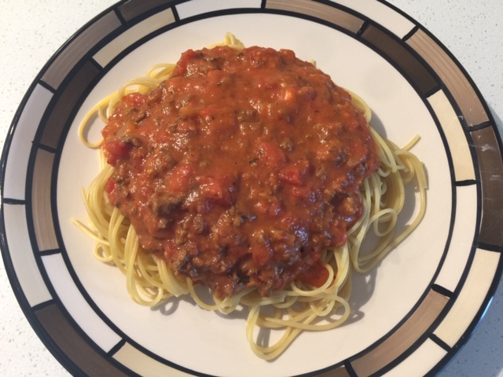

A True Italian Classic
Spaghetti Bolognese (⏰: 45 minutes)
← Back to Recipe Index 🍽

Ingredients:
- 400g Extra Lean Ground Beef
- 1 Small Onion
- 1/4 Cup Italian Salad Dressing
- 1 Jar (700mL) Pasta Sauce
- 1 Can (540mL) Petite Cut Stewed Tomatoes (Tomato Chunks) in Garlic and Olive Oil
- 2 Tbsp Light Cream Cheese
- 1 Box (375g) Spaghetti Noodles
Preparation:
- Dice Onion
Directions:
- Into a pan, add the ground beef. Turn heat to medium and scramble fry. (10-15 minutes)
- Transfer beef to colander and rinse beef with hot water, removing excess fat.
- Pour beef into large pot along with onion and Italian dressing. Turn heat to medium and fry for 10 minutes, stirring occasionally.
- Add pasta sauce and tomato chunks in garlic and olive oil. Turn heat down to low and let simmer for 30 minutes to 2 hours. Stir occasionally.
- Meanwhile cook spaghetti according to package directions.
- Add cream cheese to pasta sauce and stir until cheese has melted into the sauce. (2-3 minutes)
- Enjoy!
← Back to Recipe Index 🍽